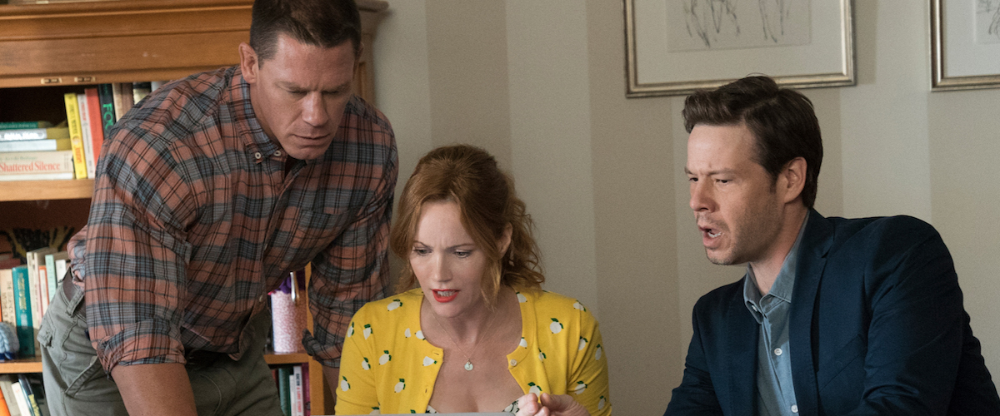

“Blockers” is about six movies in one, and only about four of them work. It’s the kind of comedy one could stumble upon late at night on HBO and thoroughly enjoy, but it strains under the weight of its tonal inconsistencies in a movie theater. It veers wildly from the style of a coming-of-age comedy like “Superbad” to something more family-oriented and heartfelt to the gross-out/raunch flicks we saw in the wake of the success of “There’s Something About Mary.” There’s something almost admirable about a comedy that gives you whiplash as it jumps from heartfelt conversations about the emotional trauma a parent faces when their child grows up to a scene in which John Cena chugs beer with his asshole, but it gets exhausting watching “Blockers” jump so many hurdles.
Parents Lisa (Leslie Mann), Mitchell (John Cena) and Hunter (Ike Barinholtz) watch their little girls meet outside of elementary school on their first day, an emotional experience for any parent. As the trio realizes that their kids have become fast-friends, Hunter jokes that this means now these strangers must be friends too—as we all know you’ll spend more time with the parents of your kid’s friends than your actual ones. Hunter then asks if they want to go get a beer, and Mitchell starts to cry (“Blockers” gets a lot of mileage out of the visual of a guy Cena's size getting emotional). Cut to a bookend milestone of educational life, Prom Night. We learn that Lisa, a single mother, has formed a loving relationship with her daughter Julie (a charismatic Kathryn Newton), but that she may be a little clingy as the young lady is about to leave her on her own. Julie speaks of wanting to go all the way to UCLA (the film takes place in Chicago) and Lisa is clearly rattled at the idea of losing her baby girl at all, much less going that far away. Mann plays the desperation and fear of being along on Lisa’s part just subtly enough for it to work. It’s a part that plays to her strengths as an actress, particularly a very funny speech in which she breaks down at the thought of dying alone. Director Kay Cannon is constantly allowing her three leads to play to their strengths—Mann’s borderline smothering, Cena’s softie-in-a-tough-shell, and Barinholtz’s wise-cracking smart-ass.